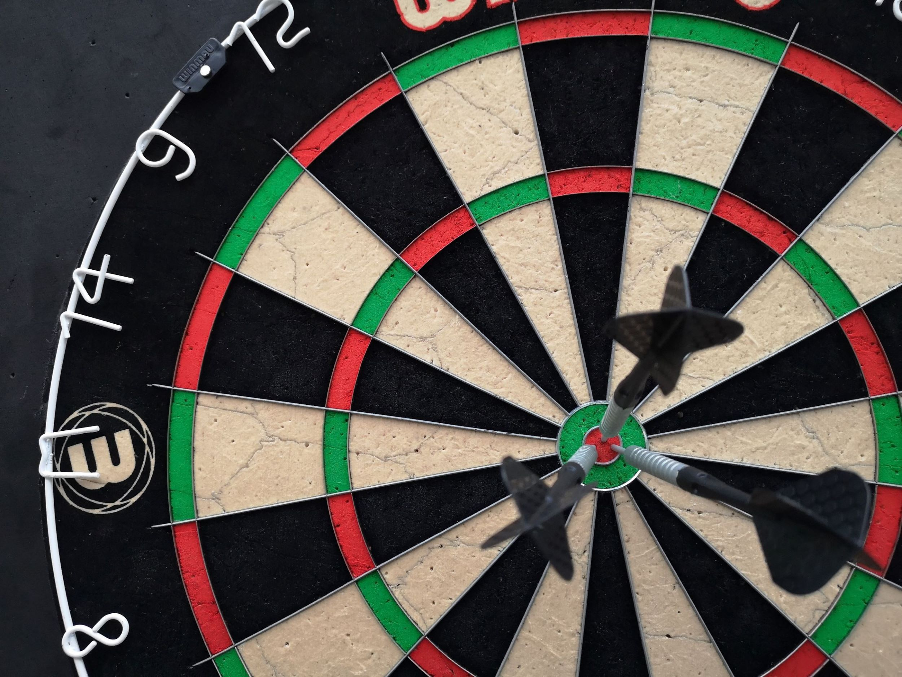

|
|||
| Home | Hobbies | Travel | Contact Me |
When I moved to North Carolina from Brooklyn, NY in 2005, I only knew a few people who had moved here before I came down. Eventually, I made some friends at work and started going out more, meeting people outside of work. The one common denominator between these transitions was darts. I met my friend, who had moved to NC before my move in 2005, at a dart match against her team. I eventually joined her team back home before our respective moves, and we became close friends. A few years later, one of my co-workers took me to a bar where his dart team was playing a match. I realized how much I missed the game and joined his team the following season. I took over the team as captain until Covid and a personal injury stopped me from playing in 2020. I even met my husband through darts after being paired with him at a blind draw dart tournament in 2012. It was then that I realized how much darts had influenced my life. Although most people play darts casually while out with friends (which is how I started), there is a large population of competitive dart players worldwide. The first organized dart championships began around the 1920s, which helped establish the National Darts Association. It wasn't until around the 1970s that Britain's first professional dart organization was formed, which helped other organizations start and develop darts as a competitive league sport. The US has the American Dart Association (ADO), which started in 1976. The ADO annually represents around 50,000 members spanning over 200+ dart clubs/leagues. We have several local dart leagues here in North Carolina, including the Raleigh Dart League (with teams within a 15-mile radius of the capital) and NC City Dart Leagues, where teams from different cities compete against each other. I have played for both leagues and had such a great time with it. The most common matches played casually and in league matches are cricket or a variation of 01 (usually 501, 301, or 1001 for a league match tiebreaker). Cricket can be played one-on-one or in a doubles format (two on two) and involves hitting specific numbers on the dartboard (15 to 20 and the bullseye). Players throw three darts during their turn to close out each number and the bullseye. If you close out a number and your opponent hasn't, you earn points until they close the number. The player wins by closing all the numbers on the board and getting more points (if applicable). In 01, players start with the set score (501 or 301) and must get down to exactly zero by subtracting their scores with each throw. The goal is to reach zero using as few darts as possible. Depending on the match, you must start and end your scoring by hitting a double of a number (the outer scoring rim of the board). There are various other match types, but those are mostly played for fun and not in a competitive setting. Whether you want a fun activity while out with friends or to find a local competitive league sport, nothing beats hanging out with great people and playing a few rounds of darts! |
  |